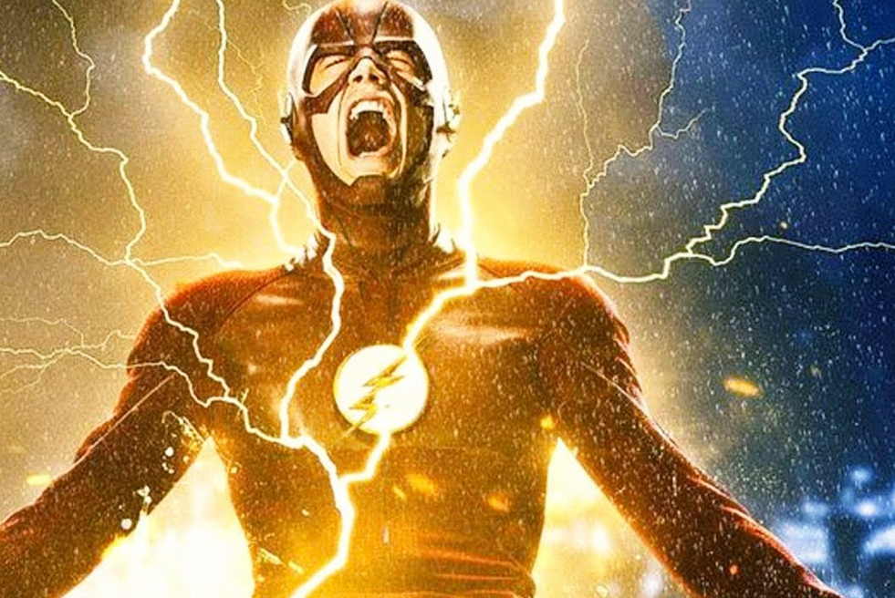
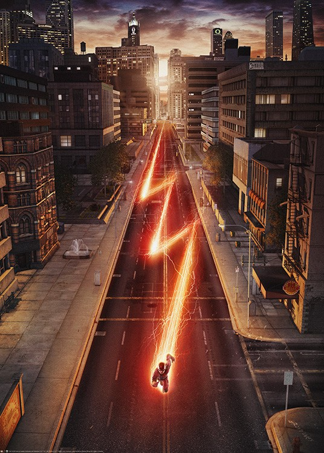
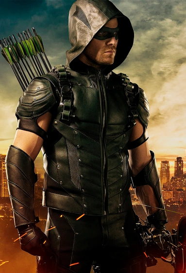
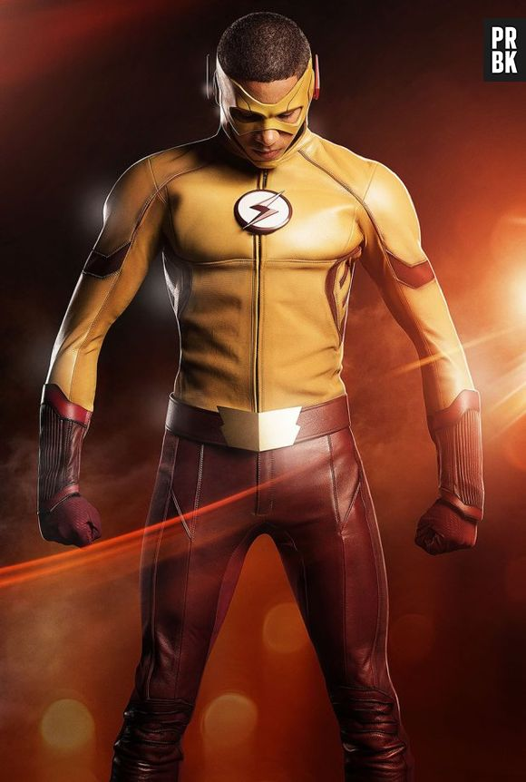
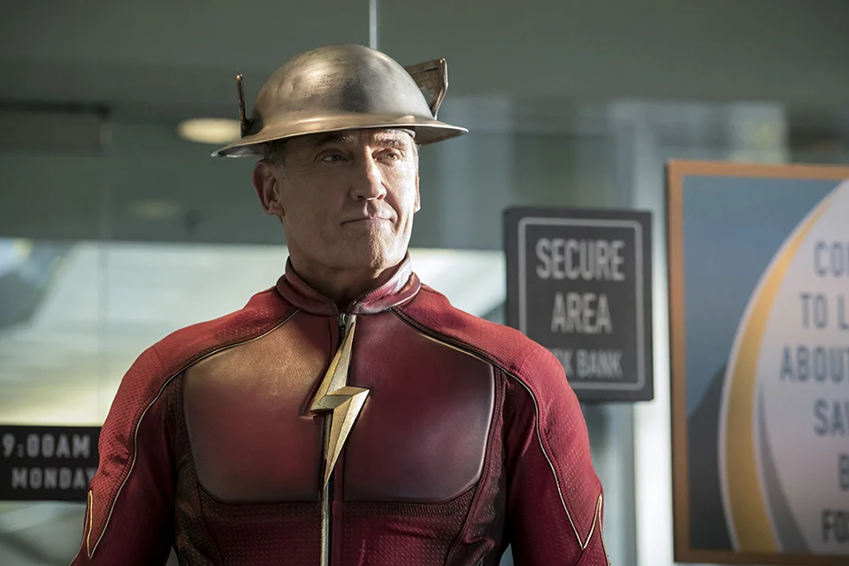
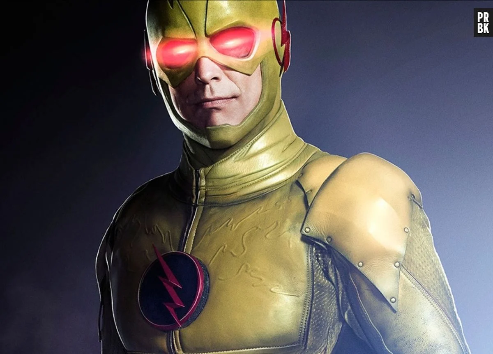
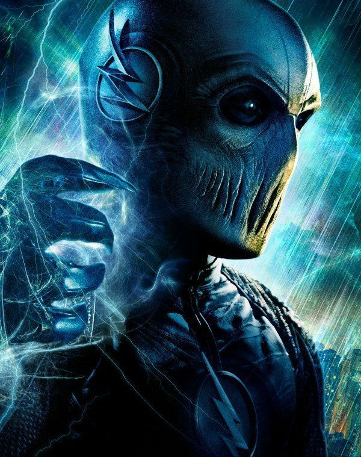
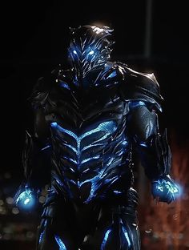
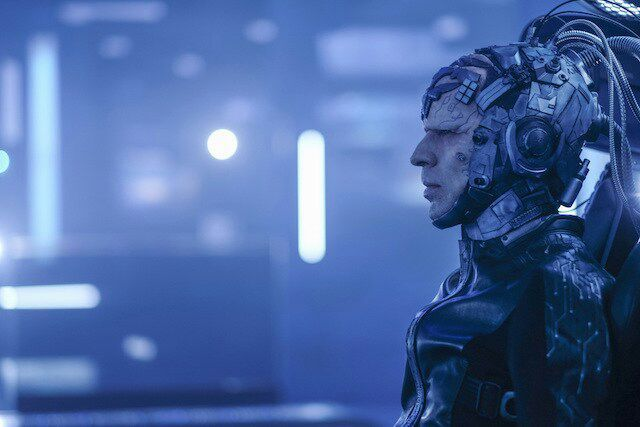

Sobre o Flash
Nascido em Missouri nos EUA, flash ganhou seus poderes após ser banhado por produtos químicos, quando seu laboratório foi atingido por um raio.
Poderes e características
O seu pode é a velocidade, onde consegue ultrapassar a velocidade da luz que é de 300.000m/s, além de conseguir atirar raios, cura acelerada, e conseguir ultrapassar qualquer objeto.
Aliados
Arqueiro Verde
Arqueiro verde é um dos aliados do flash, morador de uma cidade vizinha, constantemente vai para ajudar o flash
Kid Flash
Kid flash é o aliado mais próximo do Flash, pois o Flash é irmão adotivo do kid flash
Jay Garrick
Jay é aliado do Flash, após algumas viagens do flash para a Terra 2
Super Girl
Super girl é de outra terra, bem distante porém não deixa de ter contato com o Flash
Vilões
Flash Reverso
Flash revrso é o maior vilão do Flash, foi ele quem assassinou a mãe do Flash
Zoom
Flash da terra 2, lutava contra Jay garrick, até chegar na terra 1 e conhecer o flash
Savitar
Deus da velociade, é o Flash do futuro, porém como se tornou um Deus ele está no passado, presente e futuro
O Pensador
O pensador foi um baita oponente do flahs, pois depois de um experimento ficou com o cérebro ficou avançado, podendo ler mentes e prever futuros, sempre estando um passo a frente